What this page covers
Three stages of SMP and origami robot development.
The evidence traces how the research moved from an early actuation concept into published shape-memory hardware, material characterization, embedded thermal control, locomotion, and adaptive grasping.
- Stage 1: early origami actuation work that exposed limits in heating, recovery, packaging, and actuator authority.
- Stage 2: molded SMP surfaces with embedded heating and TCA actuation for programmed bending modes.
- Stage 3: PETG/SMP composite VSJs, thermistors, heaters, tendon routing, locomotion, grasping, and Arduino Mega control.
Stage 1: precursor
Early origami actuation work established the motion concept and exposed practical limits in heated polymer recovery, cycle life, packaging, and actuator authority.
Stage 2: Nature Communications
The TCA-driven SMP origami surface used embedded heating and twisted-and-coiled artificial muscles to produce programmable bends from a lightweight shape-memory body.
Stage 3: Philosophical Transactions
The motor-driven SMP composite robot converted the idea into PETG/SMP variable-stiffness joints with thermistors, resistance-wire heating, tendon routing, and closed-loop embedded control.
Technology evolution
Three stages, three different engineering questions.
The systems share an origami soft-robotics thread, but they should not be collapsed into one project. Each stage answered a different question: can the motion concept work, can a TCA-driven SMP surface create programmable deformation, and can a motor-driven SMP composite module become a measured variable-stiffness robot?
| Stage | Hardware | Engineering question | Demonstrations |
|---|---|---|---|
| Precursor | Early origami actuation platform. | Can selective heating and compliant geometry produce useful origami motion? | PLA/motor comparison, damage/recovery limits, and the design motivation for a lighter SMP/TCA surface. |
| Nature Communications TCA origami | Molded SMP surface with embedded heating and TCA actuation. | Can a lightweight artificial muscle drive programmed bends through heat-selected compliant regions? | Exploded TCA-origami assembly, fabrication, horizontal/diagonal/V-bend GIFs, segmented bending, and torsion-limit test. |
| Philosophical Transactions SMP composite robot | PETG/SMP composite modules with four actively heated VSJs per module and motor-driven tendons. | Can stiffness-programmable joints redirect motor-driven origami motion for locomotion and grasping? | Material screening, recovery testing, Opti-Track joint-angle measurement, Arduino Mega control, locomotion gaits, and adaptive grasping. |
Stage 1: precursor
Early origami actuation established the design problem.
The earliest stage proved that selective heating and origami geometry could redirect motion, but it also exposed the weaknesses that made a new architecture necessary: heated PLA damage, poor recovery, cycle-life limits, and bulky actuation.
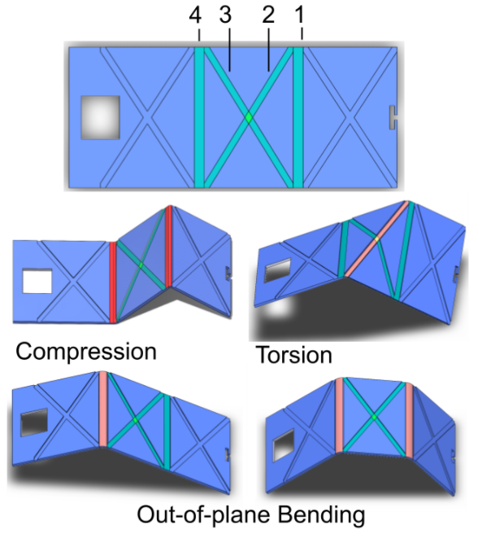
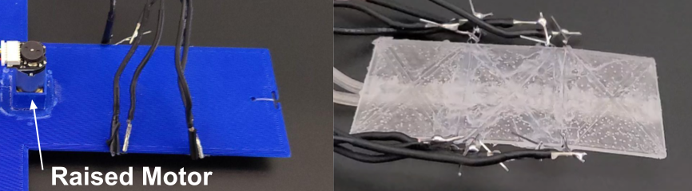
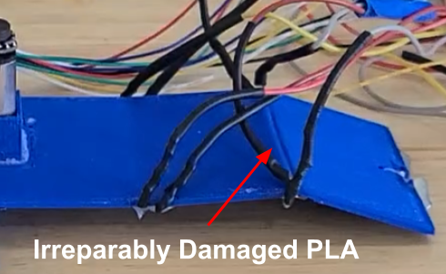
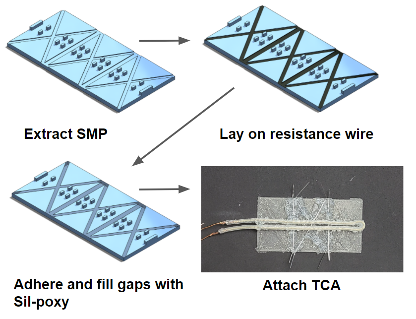
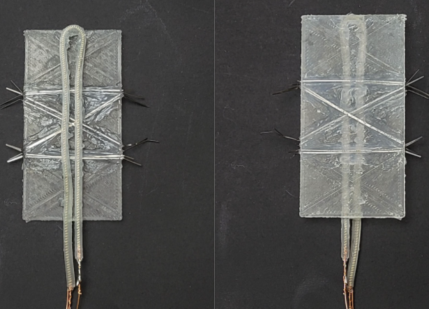
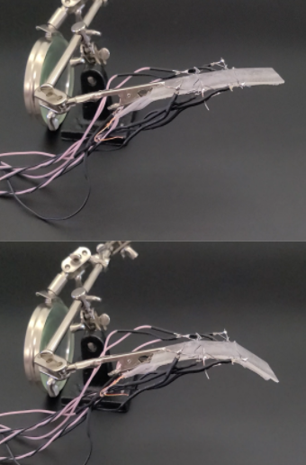
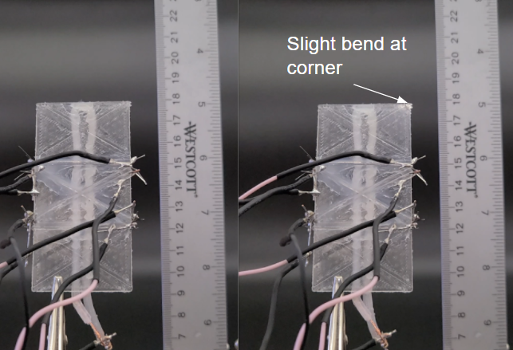
Engineering lesson
The precursor was valuable because it clarified the failure modes. The next stage needed a compact artificial-muscle package, a body material designed for shape memory behavior, and a better way to localize compliant regions.
Stage 2: Nature Communications TCA origami
Molded SMP surface, embedded heating, and twisted-and-coiled artificial muscle actuation.
The Nature Communications stage is the TCA-driven origami robot: a molded SMP surface with embedded heating and a compact TCA actuator. Selective heating softened chosen regions so the same artificial muscle could produce different bending modes.

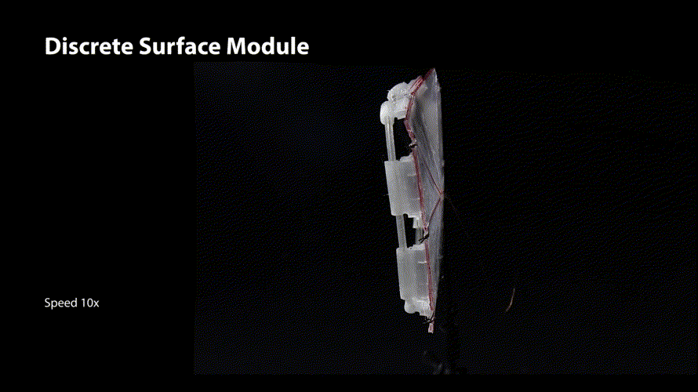

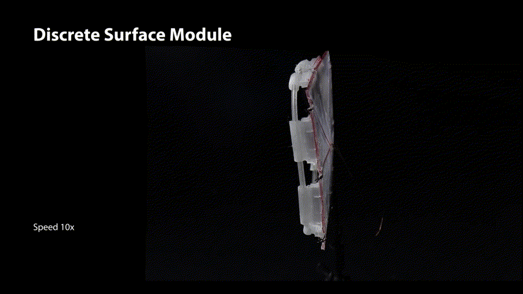
Stage 3: Philosophical Transactions SMP composite robot
Motor-driven composite variable-stiffness origami.
The Philosophical Transactions robot is not the TCA-driven surface. It is a motor-driven PETG/SMP composite origami platform: tendons and motors provide motion, while independently heated variable-stiffness joints redirect the module response.
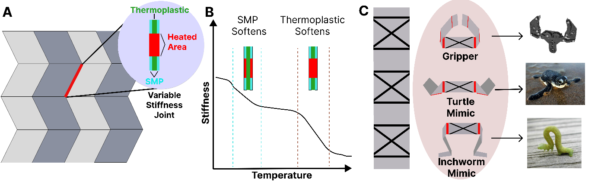
- Material system: PETG was selected after comparing Nylon, PLA, PETG, and ABS thermoplastic cores encased in SMP.
- Stiffness response: PETG showed the strongest average stiffness reduction, about 13.3% per 10 deg C, with the lowest bending-modulus variation among the tested cores.
- Recovery behavior: PETG composite VSJs had the most reliable recovery, with 0.5 deg mean recovery error and 0.6 deg standard deviation after 90 deg bending tests.
- Robot demonstrations: Two modules were combined for ground locomotion, and the same mechanism family was used for adaptive grasping.
Fabrication stack
The VSJ is a measured composite, not just a heated hinge.
The manuscript describes a low-cost composite process: mix and degas SMP resin, wet fiberglass scaffolding, place the thermoplastic core, cure the sandwich, trim the module, then add thermistors, resistance-wire heaters, copper tendon guides, and routed tendons.
SMP resin
The composite used a 35% Jeffamine D-400, 5% epoxidized soybean oil, and 60% Epon 828 mixture.
Scaffold
0.05 mm fiberglass weave held a uniform SMP layer and centered the thermoplastic core while reducing delamination risk.
Core layer
The PETG thermoplastic layer was FDM printed with thin layers to keep the VSJ profile low and geometry repeatable.
Hardware add-ons
Thermistors, resistance wires, 28-gauge copper tendon-guide loops, brass crimps, and routed tendons completed the module.
Embedded controller
Arduino Mega firmware coordinates heating, isolation, and motor motion.
The Arduino Mega controller runs two VSJ modules with eight heater PWM outputs, eight relay isolation channels, six thermistors, two encoder motors, and serial gait commands.
Thermal control
Thermistor reads are averaged and converted to temperature; PID outputs set heater PWM for the matching VSJ channel.
Circuit isolation
Relay logic disconnects inactive heaters and blocks both opposing diagonal heaters on a module from being active together.
Gait sequencing
Serial commands such as inch, undulate, and turtle map to temperature setpoints and encoder-based cable motor stages.
Material, fabrication, and test infrastructure.
The project combined material characterization, fabrication process development, force testing, motion tracking, and mechanism modeling into a single robot-development workflow.
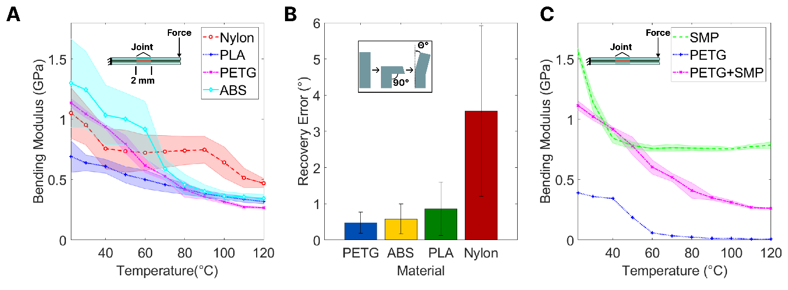
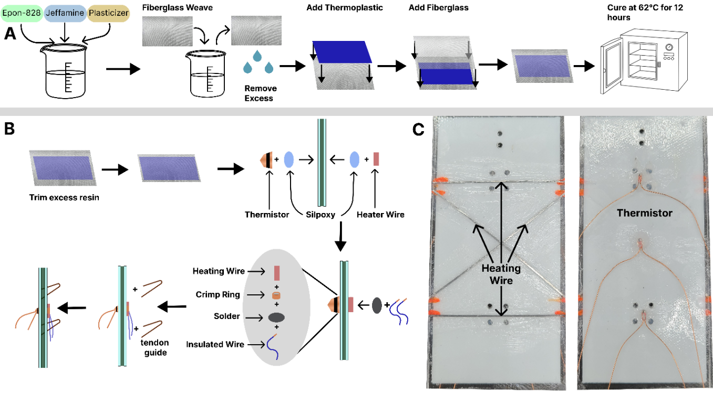

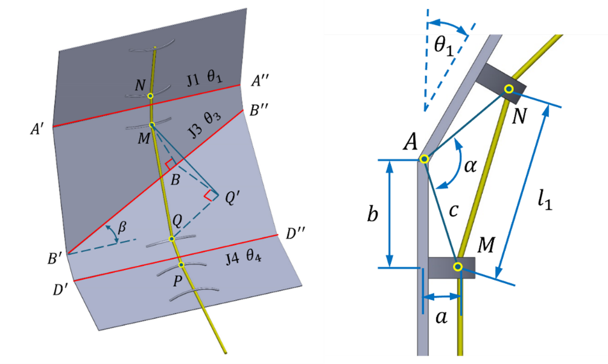
Motion library, locomotion, and grasping.
The evolved robot demonstrates why variable stiffness is valuable: the same basic module can be reconfigured for different motion paths, then assembled into systems for gait generation and adaptive object interaction. Joint-angle tests covered 10 heating combinations: five horizontal-joint combinations and five diagonal/horizontal combinations.
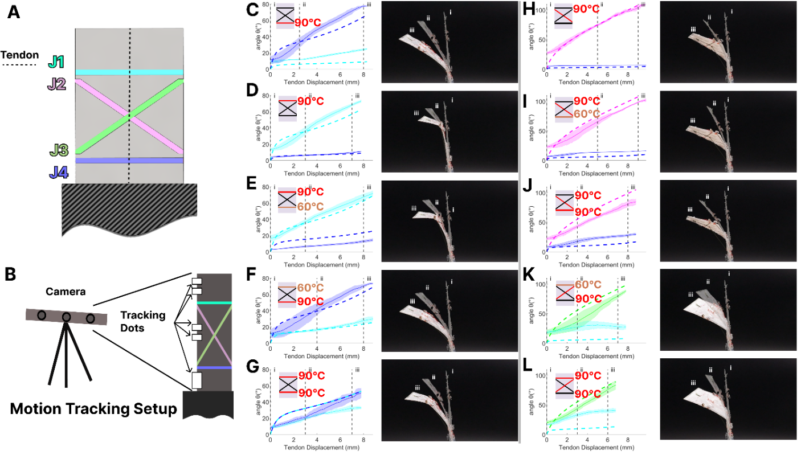
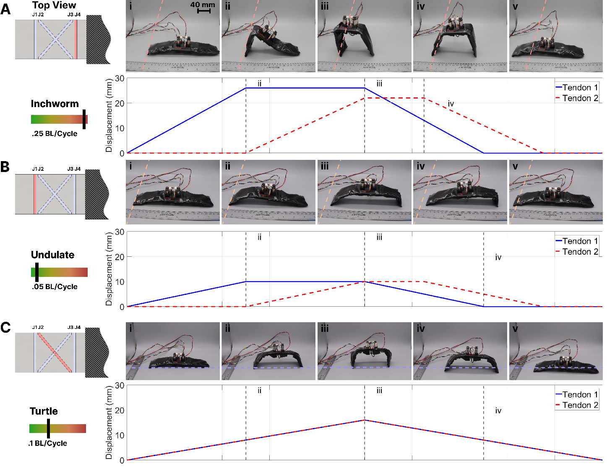
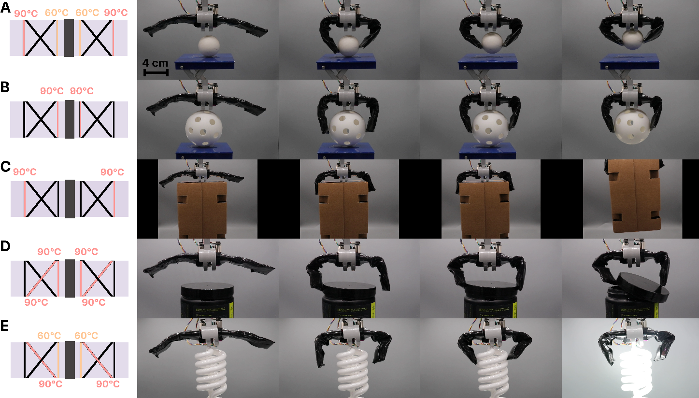
Variable-stiffness mechanism experience
Thermally tunable compliance applied to robot motion.
The same engineering themes carry into later compliant-hand work: living hinges, controlled stiffness changes, tendon routing, thermal-mechanical characterization, and robot-level validation.
Mechanism design
Experience designing living hinges, tendon guides, and compliance-controlled motion paths.
Thermal-mechanical testing
Experience linking material stiffness, temperature, actuation, recovery, and robot-level behavior.
Embedded control
Experience turning thermistor readings into PWM heater control with isolation hardware and tuned PID values.